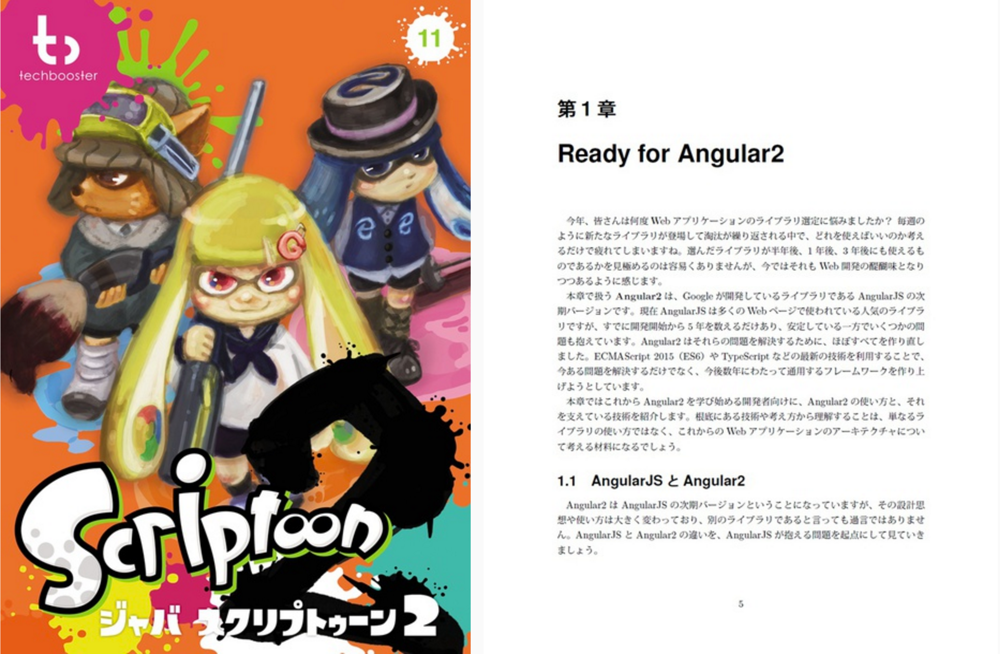
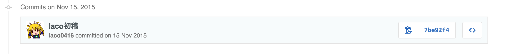
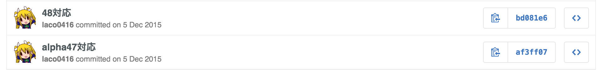
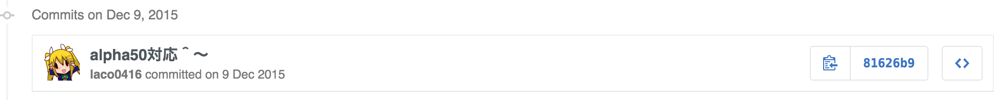
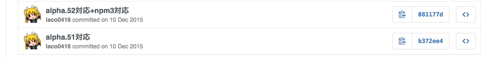
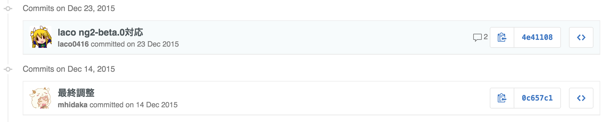

Angular 2 With Libraries
About me

- TOPGATE, Inc.
- I 💖 Google, 🍺, Anime
- TypeScript/Golang
- Angular2 Info
AngularJS with Libraries
AngularJS Library
- Module system:
angular.module()
- String-based DI (
"$http")
- Official Libraries
- ngResource
- ngRoute
- ngMock
→ Good examples to make your library.
npm search 'angular'
npm search 'ng'
In Angular 2...?
Angular 2 Library
- ES6 Modules (
import/export)
- Type-based DI
- Official Libraries
Import Library
import {Http} from 'angular2/http';
Type based DI
import {HTTP_PROVIDERS} from 'angular2/http';
@Injectable()
class SampleService {
constructor(http: Http) {}
}
@Component({...})
class MyApp {
constructor(service: SampleService) {}
}
bootstrap(MyApp, [
HTTP_PROVIDERS,
SampleService
]);
DI: Provider/Injector
MyApp(service: SampleService) : Injector
↑
bootstrap([SampleService]) : Provider
↑
SampleService(http: Http) : Injector
↑
bootstrap(HTTP_PROVIDERS) : Provider
Angular2のDIを知る - Qiita
Official Libraries
- http
- Ajax, Streaming(WIP)
- router
- Client-side URL Routing
- testing
- Utilities for testing
- upgrade
- Adapter for ng1
Setup
import {HTTP_PROVIDERS} from 'angular2/http';
bootstrap(MyApp, [
HTTP_PROVIDERS
]);
Http class
http.request(request, options): Observable<Response>
Shorthands for each methods
http.get(), http.post(), ...
Usage
import {Http} from 'angular2/http';
@Injectable()
class SampleService {
constructor(private http: Http) {}
fetch(): Observable<Sample> {
return this.http.get("./data.json")
.map(res=>res.json() as Sample);
}
}
http.request() returns Observable!
What's Observable?

ReactiveX/RxJS
RxJS provides Observable for reactive programming.
Observable in Component
@Component({
selector: 'my-app',
template: '{{ sample.someProp }}',
})
export class MyApp {
private sample: Sample = {};
constructor(service: SampleService) {
service.fetch()
.subscribe((sample) => {
this.sample = sample;
});
}
}
Component Router
provides URL-Component Mapping for SPA.
- RouteConfig
- RouterOutlet
- RouterLink
- Router
Setup
import {provide} from 'angular2/core';
import {
ROUTER_PROVIDERS,
APP_BASE_HREF
} from 'angular2/router'
bootstrap(App, [
ROUTER_PROVIDERS,
provide(APP_BASE_HREF, {useValue: "/"})
]);
Setup (Hash)
import {provide} from 'angular2/core';
import {
ROUTER_PROVIDERS,
LocationStrategy,
HashLocationStrategy
} from 'angular2/router'
bootstrap(App, [
ROUTER_PROVIDERS,
provide(LocationStrategy,
{useClass: HashLocationStrategy})
]);
Route Definition
import {RouteConfig} from 'angular2/router'
@Component({
...
})
@RouteConfig([
{path: '/foo', component: FooComponent, name:'Foo'},
{path: '/bar', component: BarComponent, name:'Bar'}
])
export class App {}
Route Definition Properties
pathcomponentnameuseAsDefaultredirectTo
Navigation
import {ROUTER_DIRECTIVES} from 'angular2/router'
@Component({
selector: 'my-app',
template: `
- <a [routerLink]="['Foo']">Foo</a>
- <a [routerLink]="['Bar']">Bar</a>
`,
directives: [ROUTER_DIRECTIVES]
})
<router-outlet>
ngView in ng2 router- Nestable
routerLink
- Modify <a> to router
-
Navigation DSL
[routerLink]="['Foo']" === router.navigate(['Foo'])
Manual Navigation
import {Router} from 'angular2/router'
export class App {
constructor(private router: Router){}
goToFoo() {
this.router.navigate(['Foo']);
}
}
Note: navigate() returns Promise!
Why Promise?
Router LifeCycle
routerOnActivate
Called on the component before activated by router.routerOnDeactivate
Called on the component before deactivated by router.routerOnReuse
Called on the component before reused by router.
All hooks can return Promise for lazy-navigation.
Lazy Navigation
 A little break.
A little break.
Comic Market 89
29-31 Dec 2015, Tokyo
TechBooster/JavaScriptoon 2

- I wrote "Ready for Angular2".
- Now on sale: BOOTH.
46 to 0
- At start: Alpha.46
- At last: Beta.0
15 Nov Alpha.46
5 Dec Alpha.47, 48
9 Dec Alpha.50 
10 Dec Alpha.51, 52
23 Dec Beta.0
31 Dec
C89! 👼
testing package
provides 3 modules
angular2/testingangular2/http/testingangular2/router/testing
angular2/testing
- Library for unit testing ng2 app
- Depends on Jasmine 😩
- Jasmine wrapper for ng2
- Easy to use DI
testing/inject
beforeEach(inject([SomeClass], (someInstance) => {
...
}));
it('...', inject([SomeClass], (someInstance) => {
someInstance.doSomething();
expect(...);
});
angular2/http/testing
- Mock library for
angular2/http
- Doesn't depend on Jasmine 😄
- provides
MockBackend
Hijack Http Injection
import {Http, BaseRequestOptions, Response} from 'angular2/http';
import {MockBackend} from 'angular2/http/testing';
bootstrap(MyApp, [
BaseRequestOptions,
MockBackend,
provide(Http, {
useFactory: (backend, defaultOptions) => {
backend.connections.subscribe((c) => {
if (c.request.url === "./data.json") {
c.mockRespond(new Response({body: {foo: "Mocked"}}));
}
});
return new Http(backend, defaultOptions);
},
deps: [MockBackend, BaseRequestOptions]
}),
SampleService
]);
angular2/router/testing
- Mock routing and spy changes of state
- Example is not yet 😢
Summary
- Angular2 can load libraries as ES6 Modules.
- Http and Observable
- Router and Promise
- Testing packages
We're hiring!
Are you lovin' Google? Let's work together!
Thanks!
@laco0416